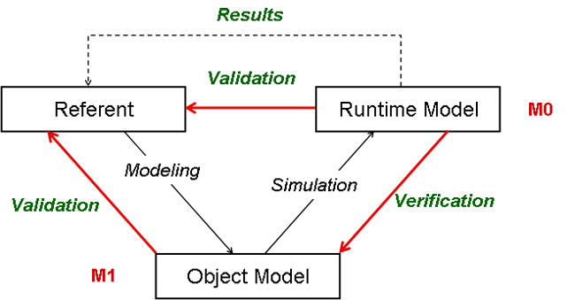

Software Engineering
The Design Workflow
Agenda
Modeling and Simulation Model

- A class is a descriptor (template) for a set of objects that have the
same features (attributes, operations, methods, relationships, and
behavior).
Ways of using UML
- UML class diagrams as sketch - result of requirement analysis
- UML class diagrams as blueprint - result of a design process
based on class sketches
- UML as programming language - UML diagrams are compiled directly
to executable code
Design (Webster)
- verb: to conceive (to
apprehend by reason or imagination-requirements analysis)
or execute a plan (UP process)
- noun:
- a preliminary sketch or outline (use cases, classes, and
interactions) showing the main features of something to be executed
<the design for the new stadium> - preliminary design
- the arrangement of elements or details (use cases,
classes, and interactions) in a product or work of art - detailed
design
- the arrangement of elements of components -
architecture or top-level design
Object-oriented design
is part of OO methodology and it forces programmers to think in terms of
objects, rather than procedures, when they plan their code. An object
contains encapsulated data and procedures grouped together to represent an
application entity. The “object interface”, how the object can be interacted, is also defined (interaction
diagrams) along with class relationships (class diagrams) in the design object
model.
Implementers translate the
design object model developed during the object-oriented design
into a particular object-oriented language (programming). An object-oriented program is
described by the interaction of design objects. Implementers use a
programming paradigm that uses design objects and their
interactions to write computer programs based on object-oriented
techniques, including instantiation, encapsulation, modularity, polymorphism, and inheritance.
Design Artifacts - Metamodel
- The design workflow is the primary modeling activity during the last
part of the Elaboration phase and the first half of the Construction phase.
- A subsystem is a part of physical system.
Artifact trace relationship
- Design models are made up of
- design subsystems
- design classes
- interfaces
- use case realization-design
- a deployment diagram
Should you Maintain Two Model?
| Strategy |
|
Consequences |
| 1. Take the analysis model and refine it
into a design model |
|
You have a single design model, but you have lost the
analysis model |
| 2. Take the analysis model, refine it into
a design model and use a modeling tool to recover an "analysis model" |
|
You have a single design model, but the analysis view
recovers by the modeling tool might not be satisfactory |
| 3. Freeze the analysis model at some point
in the Elaboration phase - refine a copy of the analysis model into a
design model |
|
You have two models, but they are out of step |
| 4. Maintain two separate models - an
analysis model and a design model |
|
You have two models - they are in step, but there is a
maintenance burden |
It is wise to remember that many systems long outlive their project life
span. Keep an analysis model for large, complex, or strategic system. They are
invaluable for:
- introducing new people to the project
- understanding the system months or years after delivery
- understanding how the system satisfies user requirements
- providing requirements traceability
- planning maintenance and enhancements
- understanding the logical architecture of the system
- outsourcing the construction of the system
Design classes come from the problem domain and the solution domain.
Anatomy of a Design Class
- With analysis classes you are trying to capture the required behavior of
the system without worrying about how this behavior is going to be
implemented.
- With design classes you have to specify exactly how each class fulfill
its responsibilities
- complete the set of attributes and fully specify them
including name type, type, visibility, and (optionally) default
values
- complete the set of operations and fully specify them
including name, parameter list, and return type
- analysis relationships (5 types) must be refined to
design relationships that are directly implementable in the target OO
language
Well Formed Design Classes
- Always assess a design class from the point of view of the users of the
class
- Four minimal characteristics must have to be considered for a
well-formed design classes:
- complete and sufficient
A complete and sufficient class gives users of the class
(public operations) the contract they expect-no more and no less.
- primitive
Primitiveness - services should be simple, atomic, and unique.
- high cohesion
Each class should capture a single, well-defined abstraction, using
the minimal set of features.
- low coupling
A class should be associated with the minimum number of other
classes to allow it to fulfill its responsibilities.
High Cohesion
Each class should capture a single, well-defined abstraction, using the minimal
set of features.
- Each class should model a single abstract concept
- Should have a set of operations that support the intent of the class
- If a class needs to have many responsibilities, you create "helper'
classes to implement some of these
- The main class then delegates responsibilities to its helper
classes
- Cohesive classes are easy to understand, reuse, and maintain
- A cohesive class has a small set of responsibilities that are intimately
related.
How to fix it?
- Is the below model is analysis or design one?
Selling system:
HotelBean was responsible for selling room stays in hotelCarBean for selling car hireHotelCarBean for selling package of car hire with hotel
stay
Low Coupling
A class should be associated with the minimum number of
other classes to allow it to fulfill its responsibilities.
- One of the common mistakes the novice OO designer is to connect
everything in the model to everything else on a more or less ad hoc
basis.
- Coupling is your worst enemy in object modeling.
- A highly coupled model is the equivalent of "spaghetti" code in the
non-OO world and will lead to a system that is incomprehensible and
not maintainable.
- You can find that highly coupled OO systems often result from projects
in which there is no formal modeling activity, where the system is
simply allowed to evolve in an ad hoc manner over time.
- Do not make connections between classes because just one class
has some code that another class could use. This the worst sort of
reuse as you sacrifice the architectural integrity of the system for small
savings in development time.
- High coupling is good within a subsystem as this indicate high
cohesion within the component.
A Paradigm for Verifying Analysis Objects and Classes
- Use commonality and variability analysis as
a primary architectural and design approach than direct CRC classes or looking for at just nouns
and verbs.
- Find what is varying and encapsulate it.
- Use inheritance to classify variation in behavior
- interfaces
- abstract classes
- subclasses
- Containing a reference to (interface or abstract class) hides these
derived classes that represents variations in behavior
- These derived classes are hidden (encapsulated) from the calling class.
- This promotes loose coupling between generalization layers.
Encapsulate, encapsulate, encapsulate ...
- Encapsulation of data - implementation of internal (private) data
structures is not essential
- Encapsulation of other objects - delegation to existing objects via
wrapper, adapter classes
- Encapsulation of methods - implementation of methods in terms of other
private methods
- Encapsulation of types - derived classes that might vary or private
nested classes
Interfaces and Specialization
- Interface (Abstract Class)
- Defines the commonality
- What interface is needed to handle the responsibilities of this
component?
- Derived classes
- Defines the variability
- Given this particular implementation (this variation), how can I
implement it with the given specification?
- Process (management) perspective
- Identifies the interfaces I need to use to handle all the cases of
the domain (commonality)
- Given the interface, how can I implement this particular case (this
variant).
Inheritance vs. Aggregation
- Inheritance is the strongest form of coupling between classes.
- Encapsulation is weak within a class hierarchy. Changes to the
base class ripple down to changes in subclasses.
Changes to the base class have a large impact on other class in the
system - "fragile case class"
- It is an inflexible relationship - fixed at runtime.
- Above, the beginner's solution of modeling roles in
organization
- Is an employee just his or her job, or is it rather
that employee has a job?
- Subclasses should always represent "is kind of"
rather than "is role played by".
Multiple Inheritance
- Multiple inheritance allows a class to represent more than one type
(parent).
- Super types (parents) must be semantically disjoint.
- If there is any overlap in semantics between the base classes,
there is the possibility of unforeseen interaction between them.
- With inheritance you get two things:
- interface - the public operations of the base class
- implementation - the attributes, relationships, protected and
private operations of the base class
- Mixin classes are designed to be "mixed in" using multiple
inheritance.
- This is a safe an powerful idiom.
- Above, the
Dialer class is a simple mixin.
- With interface realization you get exactly one thing:
- an interface - a set of public operations, attributes, and
relationships that have no implementation
- in Java a class extends one class only, but can implement multiple
interfaces
Nested classes
A nested (in Java inner) class is a class defined inside another class.
- A subsystem is just a special
component.
- The activity "Design a subsystem" is about breaking up the system
into parts that are independent as possible.
- These parts are called subsystems.
- Interactions between subsystems are mediated by interfaces.
- The goals of subsystem design are to minimize coupling in the system by
designing appropriate interfaces and to ensure that each subsystem correctly
realizes the behavior specified by its interfaces.
- An interface specifies a named set of public features.
- The key idea behind interface is to separate the specification of
functionality (the interface) from its implementation by a classifier such
as a class or component (subsystem).
- An interface specifies a named set of public features.
- Interfaces separate the specification of functionality from its
implementation.
- Interface define a contract.
- If the implementation language doesn't directly support interfaces, just
use abstract classes.
- Component-based development is about constructing software
from plug-in parts.
- Interfaces are key to component-based development (CBD).
- If you want to create flexible component-based SW for which
you can plug-in new implementation at will, you must design
with interfaces.
- UML definition: "A component represents a modular part of a
system that encapsulates its contents and whose manifestation is
replaceable with its environment."
- Interfaces that are realized by a classifier are its provided
interfaces (bullets).
- Interfaces that a classifier needs are its required interfaces
(sockets).
- A component acts as a black box whose external behavior is
completely defined by its provided and required interfaces.
- Because of this, one component can be replaced by another component that
supports the same communication protocol.
Architecture and Layering Pattern
- The layering pattern organizes subsystems and interfaces
into semantically cohesive layers.
- The essence of creating a robust layered architecture is to
manage the coupling between subsystems by
- introducing new interfaces where needed
- repackaging classes into new subsystems in a way that reduces the
coupling between subsystems
- Ideally, you want the layers to be as decupled as possible, so
try the ensure that
- dependencies go one way
- all dependencies are mediated by interfaces
- Designing to a contract is more flexible then designing to
implementation.
- Flexibility can lead to complexity-so take care.
- One of the secrets of good OO analysis and design is identifying the
fluid (variability) and stable parts (commonality) parts of a
system and modeling each accordingly.
- Remember the KISS rule - keep interfaces sweet and simple.
| Description |
File |
Source |
| Silenus and Ficus Use Case |
Image |
FICUS.eap
|
| Tracker Use Case |
Image |
| Ficus Components |
Image |
| Ficus Upload Sequence Diagram |
Image |
| Ficus Download Sequence Diagram |
Image |
| Ficus Deployment Diagram |
Image |
| Ficus Class Diagram |
Image |
|
{kind=link}
{kind=link}
{kind=link}
{kind=link}
{kind=link}
{kind=link}
{kind=link}